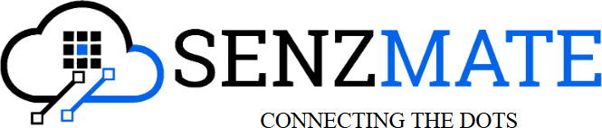

You describe intent; AI drafts. Your value becomes judgement, design and review.
AI moves from giving text to taking actions: running code, calling APIs, opening PRs.
Background agents work on tasks in parallel while you focus on something else.
Breaking problems down, system design
Spotting what's wrong in AI output
Version control, CI, safe defaults
Working with people and requirements
AI multiplies skill. It does not replace it.
| Tool | Good for | Link |
|---|---|---|
| ChatGPT | General help, snippets, explanations | chatgpt.com |
| Claude | Long documents, coding, reasoning | claude.ai |
| Gemini | Google ecosystem, multimodal | gemini.google.com |
| Google AI Studio | Free playground for the Gemini API | aistudio.google.com |
You copy-paste between chat and code. The AI can't see your project, can't run anything, can't check if its answer works.
| Tool | What it does | Link |
|---|---|---|
| GitHub Copilot | Autocomplete, chat, agent mode, PR code review | copilot |
| Cursor | AI-first VS Code fork, multi-file edits, agent | cursor.com |
| Windsurf | AI IDE with an agent ("Cascade") | windsurf.com |
| Cline | Open-source agent extension for VS Code | cline.bot |
GitHub Copilot is free for verified students through GitHub Education.
| Tool | What it does | Link |
|---|---|---|
| Claude Code | Agent in terminal / IDE / desktop — reads repo, edits, runs tests | claude.com |
| OpenAI Codex | Coding agent: CLI + cloud tasks | openai.com |
| Gemini CLI | Open-source terminal agent | github |
| Aider | Open-source pair programmer in the terminal | aider.chat |
| Tool | Best for | Link |
|---|---|---|
| v0 (Vercel) | React / Next.js UI from a prompt | v0.app |
| Bolt | Full-stack apps in the browser | bolt.new |
| Lovable | Full apps + backend (Supabase) | lovable.dev |
| Replit | Build, run, deploy with an agent | replit.com |
Prototypes, hackathons, MVPs, landing pages
Code quality, security, scaling — still needs engineering
| Area | Tools | Links |
|---|---|---|
| AI code review | CodeRabbit, Copilot code review | coderabbit.ai |
| Test generation | Qodo | qodo.ai |
| Documentation | Mintlify | mintlify.com |
| Research | Perplexity, NotebookLM | perplexity.ai · notebooklm |
| Local / open models | LM Studio, Jan, Ollama, Hugging Face | → after the build |
Examples:
Copy code in → copy answer out → paste → fix errors yourself.
Select file, ask inline, accept the diff.
Describe the task — it finds files, edits, runs, verifies.
| Chatbot | Agent | |
|---|---|---|
| Output | Text | Actions + results |
| Steps | One reply | Many, chosen by itself |
| Sees the world | No | Via tools |
| Who finishes | You | The agent (with your OK) |
It decides what to do next based on what it just observed.
Fixed steps A → B → C
Classify input, send to the right handler
Split work, run at once, merge results
One LLM splits the task and delegates
Generate → critique → improve
LLM chooses its own path with tools, in a loop
No goal-driven loop, no tools.
One response, no actions.
Goal + tools + loop + decides its own steps.
Uses an LLM, but steps are fixed in code.
Chooses tools based on what it finds.
An ML ranking model — not an LLM with tools in a loop.
Reads ticket → checks order DB → refunds or escalates
Issue → code fix → tests → pull request
Question in English → SQL → run → chart
Alert → read logs → find cause → suggest fix
Open-source visual workflow automation with a built-in AI Agent node. Self-host free, or use the cloud. n8n.io
OpenAI, Claude, Gemini — or local Ollama / LM Studio
Window buffer, Postgres, Redis
Sheets, Gmail, HTTP, Code, another workflow, MCP Client
🤖 Telegram bot answering questions from your lecture notes (RAG with a vector store node)
📰 Daily digest: RSS + web → AI summary → email
🎟 Event registration assistant: Google Form → AI checks → confirmation email
npx n8n. GitHub must reach it, so a local install needs a tunnel such as ngrok.| No-code (n8n, Zapier) | Code (SDKs, frameworks) | |
|---|---|---|
| First version | Minutes – hours | Hours – days |
| Integrations | Hundreds ready-made | Write your own |
| Custom logic | Limited (Code node helps) | Unlimited |
| Testing / version control | Harder | Normal dev practices |
| Best for | Automations, internal tools, prototypes | Products, complex agents, scale |
Decides what to do next · reads tool results · writes the final answer.
| Need | Choose | Examples |
|---|---|---|
| Hard reasoning, coding | Frontier model | Claude Opus / Sonnet, GPT top tier, Gemini Pro |
| Fast + cheap, simple steps | Small model | Claude Haiku, GPT mini, Gemini Flash |
| Private / offline | Open-weight, local | Qwen, Gemma, Llama via LM Studio / Jan / Ollama |
How much text it can read in one request
The billing unit · 1 token ≈ ¾ of a word
Time to answer — matters in a loop
Docs: docs.claude.com · platform.openai.com/docs · ai.google.dev
A tool = a function the model can ask to call. You describe it with name + description + input schema.
{
"name": "check_book",
"description": "Check if a library book is available",
"input_schema": {
"type": "object",
"properties": {
"title": { "type": "string" }
},
"required": ["title"]
}
}
The model never runs code itself. Your program runs the tool and sends back the result.
📖 Read data — search, DB query
✍️ Act — send email, create ticket
🧮 Compute — run code
Knowledge
web_search("IEEE CS events 2026")→ top 5 links + snippets
Knowledge
fetch_url("https://…")→ page as text
Knowledge
search_docs("refund policy")→ 3 matching paragraphs
Files
read_file("app.py")→ file contents
Compute
run("pytest -q")→ 12 passed, 1 failed
Data
query("SELECT count(*) FROM orders")→ [{count: 1532}]
Communication
send_email(to, subject, body)→ sent ✓ (needs approval)
Interface
click("Submit")→ new screenshot
Any function can become a tool: your database, a university API, an IoT device, an internal service.
def create_ticket(title: str, category: str,
priority: str = "normal") -> dict:
"""Create a helpdesk ticket."""
if category not in {"library", "it", "exams"}:
return {"error": f"unknown category '{category}'"}
ticket_id = db.insert("tickets", title=title,
category=category, priority=priority)
return {"ticket_id": ticket_id, "status": "open"}
{
"name": "create_ticket",
"description": "Create a helpdesk ticket for a student problem. Use only after confirming details with the user.",
"input_schema": {
"type": "object",
"properties": {
"title": { "type": "string", "description": "One-line summary" },
"category": { "type": "string", "enum": ["library", "it", "exams"] },
"priority": { "type": "string", "enum": ["low", "normal", "high"] }
},
"required": ["title", "category"]
}
}
do_stuff(data)check_book(title) — clear name, one jobenums, types, required fieldsdelete_all_records()A coding agent is an agent whose tools are your dev environment.
Claude Code · Codex · Copilot agent · Cursor
| Feature | What it does | Example |
|---|---|---|
| Project instructions | Rules the agent always reads | CLAUDE.md · AGENTS.md · copilot-instructions.md · Cursor rules |
| MCP servers | Add custom tools | .mcp.json · .cursor/mcp.json · .vscode/mcp.json |
| Commands / skills | Reusable prompts & workflows | /review · .claude/skills/x/SKILL.md |
| Hooks | Scripts that run on events | Format after every edit; block edits to .env |
| Permissions | What it may do without asking | Allow npm test; ask before git push |
# Project rules - Python 3.12, FastAPI, pytest - Run `pytest -q` after every change - Never edit files in /migrations - Use type hints; functions under 40 lines
{
"mcpServers": {
"campus": { "command": "python", "args": ["campus_mcp.py"] }
}
}
Docs: Claude Code · agents.md · GitHub Copilot · Cursor
Every AI app needs tools: GitHub, Drive, Slack, databases, your university API…
Before USB, every device had its own cable. MCP is one plug for AI tools.
An open standard (introduced by Anthropic, Nov 2024) for connecting AI apps to tools and data — now supported by Claude, ChatGPT, Gemini, VS Code / Copilot, Cursor, n8n and many more. modelcontextprotocol.io
The AI app the user talks to
Inside the host — one per server connection
Small program exposing tools / data
stdio = local process · Streamable HTTP = remote
model decides to call
Functions that do things
create_issue run_query check_book
app / user attaches
Read-only data put into context
File contents, DB schema, docs://syllabus
user picks (often /command)
Reusable prompt templates
/review-pr /summarise-lecture
Clients can also offer features back to servers — e.g. asking the user for input, or letting the server request a model completion.
{ "jsonrpc": "2.0", "id": 7, "method": "tools/call", "params": { "name": "check_book", "arguments": { "title": "Clean Code" } } }
| Server | Gives the agent |
|---|---|
| GitHub | Issues, PRs, code search |
| Playwright | Control a real browser — test web apps |
| Context7 | Up-to-date library docs (stops outdated code) |
| Reference servers | Filesystem, Git, Fetch, Memory… |
| MCP Registry | Notion, Figma, Slack, Postgres, and many more |
claude mcp add playwright -- npx @playwright/mcp@latest
{
"servers": {
"github": { "type": "http", "url": "https://api.githubcopilot.com/mcp/" }
}
}
# campus_mcp.py — pip install "mcp[cli]>=2"
from mcp.server.mcpserver import MCPServer
mcp = MCPServer("campus")
# LIBRARY is loaded from demo/library.json, ROOMS is sample data
@mcp.tool()
def check_book(title: str) -> dict:
"""Check if a library book is available."""
return LIBRARY.get(title.lower(), {"available": False})
@mcp.tool()
def find_free_room(time: str) -> list[str]:
"""List lecture rooms free at a given time, e.g. '14:00'."""
return [r for r, busy in ROOMS.items() if time not in busy]
if __name__ == "__main__":
mcp.run()
claude mcp add campus -- python demo/campus_mcp.py
Now Claude Code, Cursor, VS Code Copilot and n8n can all call check_book.
Docstring → tool description
Type hints → input schema
Malicious code, data theft
Hidden instructions inside tool descriptions or results
Server has write access to everything
Context = everything sent to the model in one request. The model knows nothing else about your task.
Max tokens per request — today roughly 128K to 1M+ depending on the model.
A 300-page book ≈ 100K tokens.
Each request starts from zero. Everything must be re-sent.
Too long — fails or drops old parts
Key facts buried, quality drops
A wrong fact gets repeated forever
Old and new instructions disagree
| Technique | Idea | Example |
|---|---|---|
| Just-in-time retrieval | Fetch only what's needed, when needed | Grep for one function instead of reading the whole repo |
| RAG | Search a knowledge base, insert top matches | 3 relevant policy paragraphs, not the whole handbook |
| Compaction | Summarise old turns when the window fills | "Summary so far: …" replaces 40 messages |
| Structured notes | Agent writes progress to a file, re-reads later | NOTES.md, todo list |
| Sub-agents | Sub-task in a fresh context, short result back | Researcher returns a 1-page summary |
| Trim tool results | Small JSON, not raw dumps | 5 rows, not 5,000 |
| Fewer, better tools | Don't connect 20 MCP servers "just in case" | Enable only what the task needs |
The conversation inside the context window.
Lost when the session ends.
Scratchpad, files, todo list — used during one task.
e.g. NOTES.md, plan files
Database or vector store; retrieved when relevant (RAG).
e.g. user preferences, past tickets
Separate focus · parallel work · smaller contexts
More tokens · harder to debug · more things to go wrong
| Framework | Language | Link |
|---|---|---|
| Claude Agent SDK | Python / TypeScript | docs.claude.com |
| OpenAI Agents SDK | Python / TypeScript | openai.github.io |
| Google ADK | Python / Java | google.github.io/adk-docs |
| LangGraph | Python / JS | langchain.com/langgraph |
| CrewAI | Python | crewai.com |
| Vercel AI SDK | TypeScript | ai-sdk.dev |
| n8n | Visual / no-code | n8n.io |
Answers student questions, checks library books, and creates support tickets — with approval.
# pip install openai
# set OPENROUTER_API_KEY in your environment
»import os
»from openai import OpenAI
»
»client = OpenAI(
» base_url="https://openrouter.ai/api/v1",
» api_key=os.environ["OPENROUTER_API_KEY"])
»MODEL = "nvidia/nemotron-3.5-lightning:free"
»
»resp = client.chat.completions.create(
» model=MODEL,
» messages=[{"role": "user", "content": "Hi! What can you do?"}],
»)
»print(resp.choices[0].message.content)
OPENROUTER_API_KEYOne request, one reply. This is still just a chatbot.
Free limits: 20 requests a minute, 50 a day. Free models change, so pick one with tool support. No private data.
»SYSTEM = """You are CampusHelp, the helpdesk agent for our university.
»- Answer briefly and politely.
»- Use tools to check facts. Never guess book availability.
»- Always ask before creating a ticket."""
messages = [
» {"role": "system", "content": SYSTEM},
{"role": "user", "content": question},
]
resp = client.chat.completions.create(model=MODEL, messages=messages)
print(resp.choices[0].message.content)
The system prompt sets role, rules and tone — the agent's job description.
It's the first layer of the context — sent with every request.
»import json
»# Import the catalogue, like loading a database table
»BOOKS = json.load(open("demo/library.json", encoding="utf-8"))["books"]
»LIBRARY = {b["title"].lower(): b for b in BOOKS}
»
»def check_book(title):
» return LIBRARY.get(title.lower(), {"error": "not in catalogue"})
»
»def search_faq(query):
» return {"answer": "Wi-Fi password resets are done at the IT desk, Block B."}
»
»def create_ticket(title, category):
» return {"ticket_id": 1042, "status": "open"}
»FUNCS = {"check_book": check_book, "search_faq": search_faq,
» "create_ticket": create_ticket}
»
»TOOLS = [
» {"type": "function", "function": {
» "name": "check_book",
» "description": "Check if a library book is available",
» "parameters": {"type": "object",
» "properties": {"title": {"type": "string"}},
» "required": ["title"]}}},
» # ... search_faq and create_ticket defined the same way
»]
Real Python functions + a schema the model reads.
In real life these call a database or API. Here they're fakes so the demo always works.
Pass tools=TOOLS in the request — the model may now reply with tool_calls instead of text.
Same idea as input_schema earlier. OpenAI-style APIs call it parameters.
»while True:
resp = client.chat.completions.create(
» model=MODEL, messages=messages, tools=TOOLS)
» msg = resp.choices[0].message
» messages.append(msg)
»
» if not msg.tool_calls:
» break # final answer
»
» for call in msg.tool_calls:
» args = json.loads(call.function.arguments)
» output = FUNCS[call.function.name](**args)
» messages.append({"role": "tool",
» "tool_call_id": call.id,
» "content": json.dumps(output)})
print(msg.content)
Call model → if it wants a tool, run it → send the result back → repeat until it answers.
msg.tool_calls → model wants a tool.tool_call_id links each result to its request.
Every trip round the loop is one request against your free limit.
»import pathlib
»MEM = pathlib.Path("memory.json")
»
»def load_memory():
» return json.loads(MEM.read_text()) if MEM.exists() else []
»
»def remember(question, answer):
» history = load_memory() + [
» {"role": "user", "content": question},
» {"role": "assistant", "content": answer}]
» MEM.write_text(json.dumps(history[-20:])) # last 10 exchanges
messages = ([{"role": "system", "content": SYSTEM}]
» + load_memory()
+ [{"role": "user", "content": question}])
# ... loop ...
»remember(question, msg.content)
Save the conversation to a file; reload it next run.
Keeps only the last 10 exchanges — context engineering in one line.
Production: a database per user, or a vector store for search.
»MAX_STEPS = 8
»RISKY = {"create_ticket"}
»
»def run_tool(name, args):
» if name not in FUNCS:
» return {"error": f"unknown tool {name}"}
» if name in RISKY:
» print(f"⚠ Agent wants to run {name}({args})")
» if input("Approve? [y/N] ").strip().lower() != "y":
» return {"error": "user declined"}
» try:
» return FUNCS[name](**args)
» except Exception as e:
» return {"error": str(e)} # let the model recover
»for step in range(MAX_STEPS): # instead of while True
...
» output = run_tool(call.function.name, args)
» print(f"[log] tool={call.function.name} args={args} -> {output}")
Max steps · human approval for risky tools · errors returned, not crashed · logging.
The model asks; your code decides. This is where safety lives.
✅ Done. Run the full agent: python demo/helpdesk_agent.py
# Swap OpenRouter for a model on your laptop. # Only these two lines change: »client = OpenAI(base_url="http://localhost:1234/v1", api_key="local") »MODEL = "qwen3.5-4b" # Tools, loop, memory and guardrails stay exactly the same. # Run it: python demo/local_agent.py
Point the client at LM Studio / Jan running Qwen 3.5 4B.
Both speak the same API, so the agent doesn't notice.
🧪 Compare: speed, and how often the small model picks the right tool.
»{
» "mcpServers": {
» "campus": {
» "command": "python",
» "args": ["C:/path/to/demo/campus_mcp.py"],
» "disabled": false,
» "autoApprove": []
» }
» }
»}
pip install "mcp[cli]>=2"Empty autoApprove = Cline asks before every tool call.
get_exam_timetable(course_code)find_free_room(time)weather_today(city)call a free weather API
🔌 Expose it as an MCP server and use it from Claude Code / Cursor / n8n
💻 Rebuild the same agent in n8n with a local Qwen model — compare
Starter code: demo/ folder · github.com/janarthan-j/tech_talk_frontiers-
No API bill
Data never leaves
Works without Wi-Fi
Try any open model
| Tool | What it is | Link |
|---|---|---|
| LM Studio | Discover, download, chat; local API server (llama.cpp, MLX on Mac) | lmstudio.ai |
| Jan | Open-source ChatGPT-style app, runs offline on llama.cpp | jan.ai |
| llama.cpp | The C/C++ engine underneath both | github |
| Ollama | CLI-first alternative, llama.cpp-based | ollama.com |
| Model (examples) | Size | RAM (Q4) | Good for |
|---|---|---|---|
| Qwen 3.5 2B | 2B | ~2 GB | Very fast; classify, extract, simple chat |
| Qwen 3.5 4B starter | 4B | ~3–4 GB | Basic tool calling, coding help |
| 9B / 8B class Qwen, Gemma, Llama | 8–9B | ~6–8 GB | Stronger reasoning; 16 GB laptop |
Find models: huggingface.co/Qwen · lmstudio.ai/models
Compress weights: Q8 → Q5 → Q4. Q4 ≈ ¼ of full size with small quality loss.
The model file format llama.cpp loads.
~0.6 GB RAM per billion params at Q4, plus room for context.
LM Studio and Jan expose an OpenAI-compatible server. Code written for OpenAI works locally by changing one line.
from openai import OpenAI
»client = OpenAI(base_url="http://localhost:1234/v1", api_key="local")
resp = client.chat.completions.create(
model="qwen3.5-4b", # name as shown in LM Studio
messages=[{"role": "user", "content": "Explain recursion in 2 lines"}],
)
print(resp.choices[0].message.content)
| App | Default endpoint |
|---|---|
| LM Studio | localhost:1234/v1 |
| Jan | localhost:1337/v1 |
| Ollama | localhost:11434/v1 |
n8n · VS Code extensions (Cline, Continue) · the agent we build later
Slower, weaker reasoning, more tool-call mistakes. Great for learning — test carefully before production.
LLM output is non-deterministic → test differently.
| Level | What | How |
|---|---|---|
| Unit | Tools work correctly | Normal pytest |
| Golden set | 20–100 real tasks with expected outcomes | Run on every change, track pass rate |
| LLM-as-judge | Grade open-ended answers with a rubric | A second model scores the output |
| Trajectory | Right tools, sensible order? | Inspect traces |
| Human review | Sample real conversations | Weekly review |
Tools: Promptfoo · LangSmith · Langfuse · Braintrust
🔒 Least privilege — read-only by default
🙋 Human-in-the-loop for pay, delete, send
📦 Treat tool output as data, not instructions
✅ Validate inputs/outputs · rate limits · audit logs
Example prices only — check anthropic.com/pricing · openai.com/api/pricing
Reuse the unchanged part of the prompt — big savings on long system prompts and tools.
Small model for easy steps, big model only for hard ones.
Summarise old messages; send only relevant docs.
Non-urgent work through batch APIs — cheaper.
Max iterations per task; stop runaway loops.
Track tokens, latency and errors per request.
Builds products on top of LLMs
APIs, RAG, agents, shipping AI features end-to-end.
Python/TS · APIs · context engineering · evals
Designs tool-using agents
Tool design, orchestration, reliability of multi-step agents.
Tool design · MCP · orchestration · reliability
Deploys, monitors, scales
Runs models and agents in production.
Cloud · Docker/K8s · observability · cost control
Measures quality
Builds test sets, graders and quality metrics.
Testing mindset · statistics · data analysis
Attacks systems to harden them
Finds prompt injections, jailbreaks and data leaks before attackers do.
Security · threat modelling · prompt injection
Builds AI with customers
Works on-site with clients to solve real problems with AI.
Coding · communication · domain knowledge
Decides what AI should do
…and what it shouldn't. Owns metrics and user experience.
User research · metrics · AI limitations
Feeds the models
Pipelines, vector databases, data quality for RAG.
SQL · ETL · embeddings · vector DBs
| Role | Before | Now |
|---|---|---|
| Software Engineer | Writes all code | Designs, directs AI, reviews, owns quality |
| QA Engineer | Writes test scripts | Designs evals, tests AI behaviour |
| DevOps | Pipelines & infra | + model deployment, AI cost & monitoring |
| Designer | Screens | + AI interaction & conversational UX |
| Data Analyst | Writes queries | + AI-assisted analysis, validates AI output |
Data structures & algorithms · OOP · databases · networking · Git
APIs · cloud · testing · security · CI/CD
LLM APIs · context engineering · RAG · agents · MCP · evals · local models
Communication · product thinking · ethics · judgement
Agentic coding tool on a real project
Anthropic Academy or DeepLearning.AI
Free Copilot + tools via GitHub Education
Install LM Studio or Jan, run Qwen 4B
3+ tools, memory, guardrails
20 tasks, track pass rate
Blog post or LinkedIn write-up
Deployed, monitored, with real users
An open-source AI tool or MCP server
Build an agent in a team, under pressure
Reads your lecture PDFs and quizzes you
Checks format and references
Answers FAQs, registers attendees
Labels issues and drafts replies
Finds free rooms and timetables
Expose a university API to every AI tool